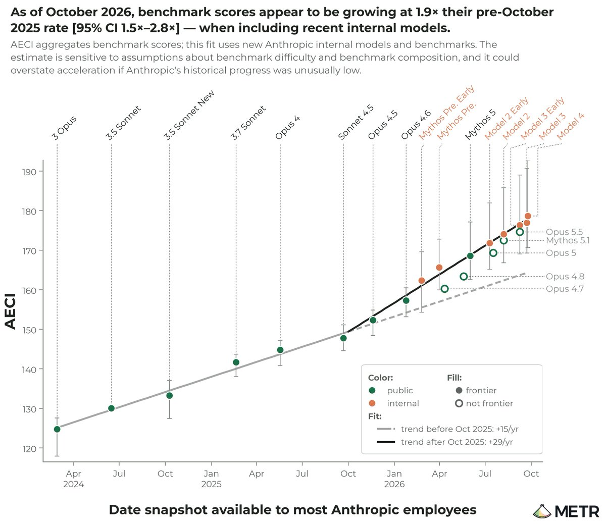
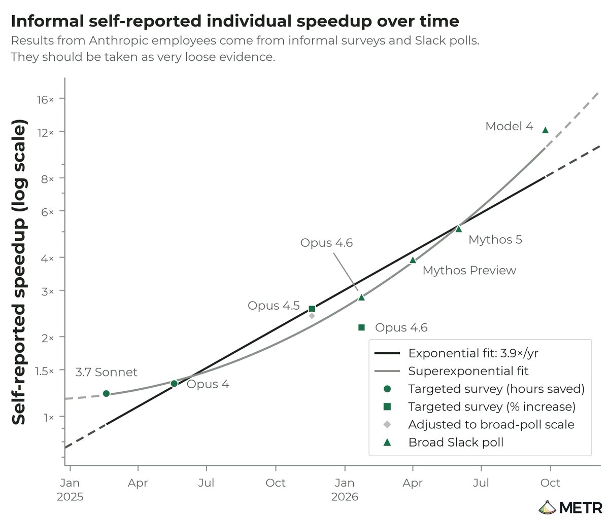
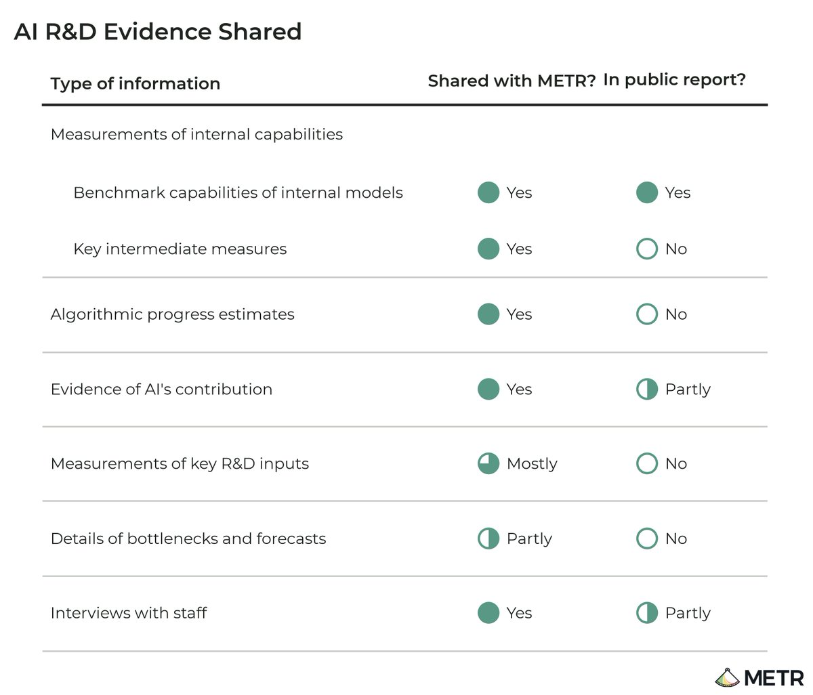
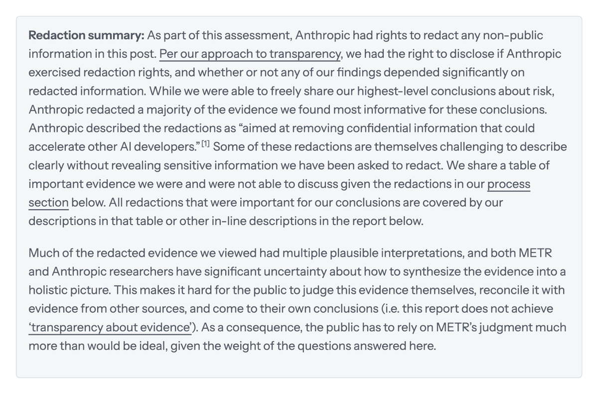
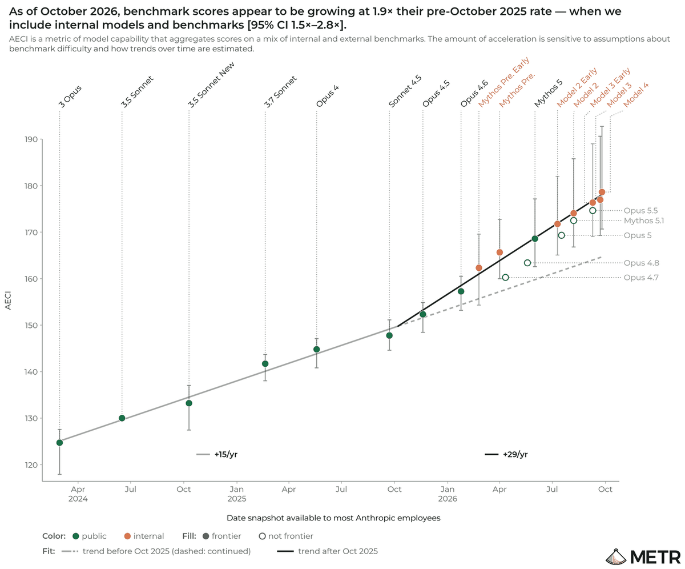

按原文章节的详细导读：约 2× 加速、多数或来自 AI 做研发、大半证据被删红；附 X 讨论
原文：Independent Assessment of AI R&D Acceleration at Anthropic in October 2026 · METR · 2026-11-05 本页按报告原有章节做逐节详细导读（编译），保留全部关键数字、方法与限制条件；不是全文逐字翻译。文中短引号内为原文关键句。图表版权归 METR / 原作者，文末附 X 讨论。
METR（Model Evaluation & Threat Research）从 2026-08-12 到 2026-10-29，在 Anthropic 内部做了一场高权限访问评估，核心问题是：AI 本身有没有在加速 AI 研发。团队投入约 2.5 个全职人力，不收 Anthropic 的钱，最终向 Anthropic 提交约 100 页完整报告；公开版里，Anthropic 删掉了 METR 认为最有信息量的大部分证据。
公开版能直接说的主观结论有三条：
公开侧最硬的数字是：自 2025-10 起，Anthropic 内部 AECI（Anthropic 版 Epoch Capabilities Index）增速约 1.9×（95% CI：1.5–2.8×），相当于过去一年的基准进步≈此前两年（约从 Claude 2.1 到 Sonnet 4.5）。稳健性检验把加速估到 1.1×–2.9×。
阅读提示**：Anthropic 大量删红后，公众无法自己核对最关键证据，只能比理想状态更多地依赖 METR 的判断。本页后半部分整理了 METR、Anthropic 联合创始人 Sam McCandlish，以及研究者、中文圈对该报告的讨论。
报告开篇就写清合同结构：Anthropic 有权删掉任何非公开信息；METR 有权披露「是否行使了删改权」「结论是否显著依赖被删内容」。
Anthropic 确实行使了删改权，并删掉了 METR「最有信息量」证据的多数。Anthropic 的说法是：删改「aimed at removing confidential information that could accelerate other AI developers.」（旨在去掉可能加速其他 AI 开发者的机密信息。）
公开报告达不到「证据透明」。公众无法自己核对最关键证据，只能比理想状态更多地依赖 METR 的判断。
METR 同意被删内容属于这类机密，但不评价删得是否整体合理——它认为自己不适合在公司商业利益与公众知情之间做权衡。后果是：公开报告达不到「证据透明」；许多被删证据有多种合理解释，METR 与 Anthropic 研究者对如何合成全局图景都有很大不确定性。
能力进步节奏。 截至 2026-10，在定义清楚的任务上，Anthropic 提升模型能力的速度大约是 2024-03→2025-10 历史节奏的两倍；真值落在 1.3× 或 3× 附近都不意外。对更宽、更不清晰任务的外推还有额外不确定性。
归因于 AI。 当前加速的多数很可能来自 Anthropic 广泛用 AI 做研发；不确定性很大，且其他原因在 2025 年末加速中很可能也扮演了重要角色。
进一步加速的风险。 未见明显瓶颈或强递减收益，因此进一步能力进步可能导致更快加速；也可能漏了重要瓶颈。
METR 另有 2026-10 文章，提出公众理解失控风险需要搞清的高层问题。本节说明：这次内部证据如何改变了 METR 团队对那些问题的主观看法。
「显著加速整体进步率」本身会令人意外——因为递减收益和对算力缩放的依赖，通常还需要其他投入的惊人扩张。审完内部证据后，团队仍有显著不确定性与内部分歧，但多数参与本项目的 METR 员工现在相信：截至 2026-10，定义清楚任务上的能力提升速度约是历史的两倍；1.3× 或 3× 都不意外。
1.9× 的 AECI 趋势（95% CI 1.5–2.8×）显著塑造了这一判断，但也可能是对基准分布过拟合，或 AECI 方法的伪影。另一方面，AECI 数据点滞后于研究加速，且偏稀疏，未必总能可靠估近期 R&D 加速。
除 AECI 外，还有被删红的证据让团队更认真对待≈2×；也有迹象显示加速可能高于 2× 且随时间上升，但若显著更高会令他们意外。
考察过的因素包括：算力缩放、招聘、数据改进、算法发现、其他瓶颈解除等。
能有把握排除的一点：加速不是训练算力增速加快造成的。除此之外，Anthropic 内部也无共识，METR 也没有决定性证据。主观估计是：
更细的「AI 对 AECI 与训练管线各阶段的累计/瞬时效应」估算被删红。
关键担忧是：用 AI 加速可能开始复利——更强模型带来进一步加速。公开描述是：未识别出清晰瓶颈或陡峭递减收益，尽管评估过程中理解多次演变，不确定性很大。因此认为存在显著风险：未来一年进一步能力进步可能导致更快加速。
术语：用年倍数描述增长；用增长率之比描述「加速」。2× 加速＝用 1 年完成 2 年历史进步。若 AECI 历史趋势是 15 点/年，升到 30 点/年则加速率＝2。对指数增长变量，加速率＝增长率之比。

表：METR 推文配图 · AECI 趋势与加速估计 · 来源：METR_Evals
Anthropic 模型 AECI 自 2025-10 起加速约 1.9×（95% CI：1.5–2.8×）。
换言之，过去一年基准进步≈2023-10 到 2025-10（大致 Claude 2.1→Sonnet 4.5）。
该估计高于 Haiku 5.5 系统卡报的 1.7×，主要因为纳入了更新的未发布模型。
稳健性：换基准纳入、模型定年、模型纳入、饱和处理，加速估在 1.1×–2.9×。若「改进版 AECI」测到的真实演进是「无加速」或「>3×」，会令作者意外。细节见附录。
训练算力规模增速与历史相似，甚至略慢。加速不是「砸更多训练算力」造成的。
收到有说服力的证据，证明加速不是训练算力规模增速加快所致。进一步细节被删红。
相关证据线包括：访谈、自述提速、人数、代码行数、实验用量、领导层定性反思。公开可强调的有三块：
第一，访谈。 METR 与 Anthropic 都深度访谈了许多研究员，问其工作领域因 AI 使用带来的整体加速。总体印象：估计范围很宽，但大致围绕 2×。部分引语（敏感细节已删）见附录。
第二，自述提速。 最新数据来自一系列 Slack 投票：员工用 reaction 投票估计「最新模型带来的提速」。METR 认为这只是很松的证据（低投入、样本偏）。但仍观察到自述持续上升，且水平很高（2026-10 达到约 12×）。
注意：个人提速≠组织级加速率。要维持输出（如模型能力）的某增长率，通常需要劳动与/或劳动生产率的类似持续增长以克服递减收益。要显著加速整体进步，通常需要这些投入显著加速。因此更关心的是个人提速的增长率变化，而非绝对水平。关于「何种个人提速增长率才能解释关键领域估计加速」的更细分析被删红。
第三，自主贡献。 目前理解是：AI 尚不能对模型训练最重要环节做出高度显著且完全自主的贡献。但研究者描述了显著「signs of life」，暗示这类贡献可能很快出现，成熟度因领域而异。

表：自述提速随时间变化 · 来源：METR_Evals
未来 12 个月，算法进步、训练算力、实验算力、数据方面未见显著瓶颈证据。但对不同瓶颈状态的理解随更细信息多次改变，对当前评估信心不高。若干具体瓶颈分析被删红。
内部指标与方法覆盖预训练与 RL 的基准、算法效率、整体模型强度，以及算力利用率、推理效率、数据效率等。调查包括：内部指标的方法变体（花费数周，是最大不确定性来源）、相关团队对关键内部证据与加速估计的信念、训练管线其他部分是否偏估、是否对内部指标过拟合。
内部证据支持训练管线存在显著加速；部分证据暗示加速可能 >2× 且随时间上升，但解释不确定性很大。

表：管线证据示意（公开版大量涂黑）· 来源：METR_Evals
METR 评估 Anthropic 内部「AI 加速 AI R&D」的程度，以及极端有风险能力可能多快出现。Anthropic 的 Responsible Scaling Policy（RSP）把 AI R&D 加速列为关键风险指标；本次评估不特别对照 RSP 门槛，而是试图形成整体图景。
本项目始于 8 月中旬，不同于 Anthropic 于 2026-10-15 宣布的「类员工权限」独立评估方安排。
十一周独立评估围绕：
另有范围：审阅 Anthropic 2026-08 Risk Report 中 AI R&D 部分（单独发表）。合同最初还包括核查「能力 vs 安全」算力分配百分比。
METR 可请求任何其认为相关的信息；Anthropic 可单方面批准或拒绝。实务上常谈判折中到「有信息量、不太敏感、易共享」的数据。整体访问超出预期。本次未请求/获得对非公开模型的采样访问。也不是「员工式」无中介访问。
Anthropic 对报告中所有非公开信息有单方面删改权。METR 可单方面披露：审查与删改流程的存在与一般条款；是否行使删改；结论是否显著依赖被删信息；访问水平。
出于安全，评估全程在 Anthropic 设备上工作。Anthropic 提供免费 token，主要用于 AI 辅助数据分析与可视化。按惯例不收 Anthropic 付款。遵循 METR 与 AI 公司合作政策；附录有 COI 披露、合同摘录与 AEF-1 清单。
约 100 页 Full Report 试图详细回答 METR 近期提出的关键问题。公开报告能写的证据源如下（报告表）：
| 信息类型 | 是否分享给 METR | 公开报告是否描述结果 |
|---|---|---|
| 内部能力测量：内部模型基准能力 | 是 | 是 |
| 内部能力测量：关键中间指标 | 是 | 否 |
| 算法进步估计 | 是 | 否 |
| AI 贡献证据 | 是 | 部分 |
| 关键 R&D 投入测量 | 大多 | 否 |
| 瓶颈与预测细节 | 部分 | 否 |
| 员工访谈 | 是 | 部分 |

表：共享与删红证据源 · 来源：METR_Evals
因删改，公开版还无法传达：
另有若干次要删改，报告各节尽量描述。
包括但不限于：内部基准与 AECI、样本任务/评分标准/agent 花费；预训练与 RL 历史算法效率与整体强度、算力/推理/数据效率；人数与进度归因；多域训练算力；内部分析；各团队自述提速调查；全公司与部分研究团队代码行/PR；AI agent 推理花费随时间；自主研究贡献内部文档；约 15 次关键员工访谈（预定义宽范围，排除特别敏感主题）。少数请求因过于敏感未提供。Anthropic 还提供大量员工时间；METR 认为最密切合作的两人是 Anthropic 内部对 AI R&D 加速测量上下文最深的两名研究者。
合同原含核查 Anthropic 算力分配（尤其能力 vs 安全）。中途 Anthropic 改范围，去掉算力核查，只做 AI R&D 加速。取消时 METR 尚未对算力使用得出实质结论。Anthropic 称希望暂时聚焦风险评估，以后再回头做。
尽管访问很深，员工级访问仍会显著加深评估。信息管道相对窄，少数数据请求被拒。若能按需读文档、观察内部讨论、做更频繁多元对话，图景会更丰富。可能因「不知道某信息存在」或「无法自己查找」而漏掉重要信息。
评估过程中，对关键数据的解释随更多上下文多次大幅改变，甚至在关键问题上多次翻转。更充分访问本可大幅加速正确解释；仍可能有因上下文不足而误读的点。
纳入 Anthropic 仅内部模型（公开代号）：Unreleased 2022（2022 训完）；Model 2（2026-07）；Model 3（2026-08–09）；Model 4（2026-09–10）。未来模型预测被删。
常用带单一断点的 OLS 分段线性拟合；加速＝两段线性趋势之比。默认采用标准 AECI 上最佳拟合断点（主设定约 2025-10-07），以在各图保持一致。
围绕三种增长率组织：历史增长率（趋势变化前）；当前增长率（2026-10）；反事实增长率（若 Anthropic 不能用 AI）。前两者可观测，反事实只能猜。需区分 AI 带来的瞬时加速与累计加速（例如自 2025-10 以来总进步中 AI 占比）；访谈/文档常隐含讨论累计加速，而累计通常低于瞬时（因 2025 非 AI 加速因素 + AI 影响随时间上升）。
Full Report 用简单会计框架组织间接证据（箭头表示函数依赖：如预训练强度＝算法、数据质量、训练算力的函数；RL 含预训练以外全部贡献）。公开版中相关用法均被删。分析有可复现 notebook/dashboard。
用 Epoch 公开代码估各模型 AECI；分层 bootstrap 得 95% CI。每个模型有多快照（日期与分数不同）。公开发布模型：取公开发布快照，日期取「多数 Anthropic 员工可用」日。从未发布的：取获大量内部使用的快照及多数员工可用日。用内部可用日而非公开发布日，以便与未发布模型苹果对苹果；一般显示略高加速（因近期模型在公开发布前内部多留一阵）。
趋势拟合对前沿上每个快照等权 OLS。趋势 CI 只反映各模型 AECI 分数不确定性，不含「纳入哪些模型」的抽样不确定性。外生施加「恰有 1 个断点」；主设定断点 2025-10-07；稳健性检查保持该断点以便可比。
链接函数稳健性（加速 1.1×–2.9×）：
| 链接函数 | 任务难度分布直觉 | 加速 | 样本外 R² |
|---|---|---|---|
| 标准 logistic | 对称、指数尾 | 1.9×［1.5–2.8］ | 87.2% |
| Probit | 易难两侧尾更小 | 1.8×［1.3–2.7］ | 87.1% |
| Cauchit | 两侧尾更大 | 2.8×［2.0–4.1］ | 86.1% |
| Complementary log-log | 仅易题大尾 | 1.1×［0.8–1.5］ | 87.1% |
| Log-log | 仅难题大尾 | 2.9×［2.1–4.9］ | 86.9% |
| 学习链接（Stukel） | 两尾长度由数据估 | 2.6×［1.8–4.1］ | 87.0% |
拟合质量相近（cauchit 略差）；继续用 logistic，因它是 Epoch/Anthropic 默认。
快照选择：标准 1.9×；仅最高快照 1.9×；仅首次快照 2.2×；某子集（删红原因）1.9×；全部快照 1.9×。
基准选择：标准 1.9×；去掉视觉基准 2.2×；仅 Claude 标为与 AI R&D 相关的基准 2.0×；去掉平均随 AECI 上升而下降的基准 1.9×；去掉 logistic 拟合 R²<50% 的基准 1.9×；达 85% 后停用该基准（饱和稳健）1.9×。
正则：标准 1.9×；L2÷10 →1.9×；L2×10 →2.1×；无正则 1.9×；对线性时间趋势重定心 L2 →1.9×。
纳入非 Anthropic 模型时，估计加速更低（约 1.4×）：历史趋势多来自非 Anthropic，当前趋势多来自 Anthropic。两种合理解释：(1) Anthropic 2025 年处于次前沿，历史进步被低估 → 1.9× 偏高，1.4× 更准；(2) 若 Anthropic 相对少做基准优化，历史趋势可能因早期点更过拟合而偏高 → 1.4× 偏低，1.9× 更准。
相对「Mythos Preview 一次性跳升后回到旧趋势」假说：纳入新内部模型后，永久斜率变化看起来更可信。
与公开估计对比：相对 Haiku 系统卡 1.7×，主差是纳入近期仅内部模型；相对 ECI，主差是趋势只取 Anthropic 模型 + 纳入近期内部模型。
Model 4 在其测试的全部 AECI 基准上 >50%。** 9 个月前 Opus 4.6 仍有许多 <50% 的基准。难题不足令作者对现在与未来测量 AECI 的能力略感紧张。15 个 Model 4 基准中多数在 log-odds 空间看起来 reasonably linear；3/15 明显平坦或凹。去掉这 3 个可疑基准后重估，Model 4 从 178.6 升到 179.7（+1 点）——弱证据支持「肥尾导致低估加速」，幅度不大。
典型任务 token：内部基准约 2.5M in / 72k out；agentic coding 约 10M in / 94k out。粗比 Epoch/METR 公开基准花费更高。猜测若进一步缩放推理 token，各模型 AECI 可再升若干点，且跨模型回报类似 → 加速估计大致不变（未深挖；近期模型可能有更好 token 缩放）。
基准加速与真实影响：若真实影响是基准分数的凸函数（阈值），AECI 低估真实加速；若 AECI 只覆盖能力子集且真实影响对这些能力递减，则可能高估。作者自信至少存在温和的基准分数增长加速，并认为 AECI 加速未必干净映射到真实影响加速。
定义 AI speedup＝有 AI / 无 AI 的产出比（产出常难测）。结论：(1) 有高提速证据，精确量高度不确定；(2) 完全自主 AI R&D 贡献目前不是整体进步的大头，但近未来可能是。
Claude 对访谈引语是否支持「其领域因 Claude 带来 >2× 加速」的分类：Yes 2；Leans yes 3；Borderline/unclear 4；Leans no 0；No 2 → 轻度偏向 2× 或以上。
公开引语示例（敏感细节已删）：
完全自主贡献的 signs of life 来自：自动化训练管线不同部分的多次访谈；不同部分自动化程度内部报告；相关管线中人类/AI 构建任务占比定量分析。细节被删。
对抗稳健：多数数据经两名技术员工；另访谈约 15 人（许多由 METR 自选），未发现主联系人与受访者间不一致。多数分析依赖 Claude（数据收集、文档、METR 自身分析）；对照人类访谈未见系统偏差迹象。认为 Anthropic 主动误导的可能性极低；更大访问可提高对抗稳健度。
COI：项目开始时适用 v1.0 政策。一名参与者当时在与 Anthropic 谈可能职位（后拒 offer），且作为前员工持有竞争对手股权 → 其纳入评估的工作须由无利益冲突成员彻底核对并承担准确性责任。更新后政策（2026-10-09 后）对此类情况将直接要求回避。无人持有 Anthropic 股权。
非正式压力：评估自愿；METR 会考虑产出如何影响未来合作意愿。尽量把「因删改导致的局限」讨论聚焦在影响核心结论与不确定性传达的情形；避免过细过程描述妨碍探索性合作。Risk Report Review 因 Anthropic 反馈做过大量清晰度编辑；个别反馈显得过于强硬，Anthropic 接受了相关反馈。认为最终评估未被显著扭曲。
合同摘要：独立评估 AI 系统自动化/加速 AI R&D 的程度；Anthropic 提供约定访问、对接人、协助调查访谈，可拒不成比例或未过信息审查的请求但须说明并尽量给替代；交付 Full Report（未删改给 Anthropic）、公开主张（经删改流程）、（计划中的）METR 内部轻删版；无双向付款；独立性条款。
AEF-1：查询未发布模型未请求；充分计算资源与时间（从 4 周延到 11 周）；无结果或有条件补偿；方法自主；编辑控制在 METR，但 Anthropic 控制可写入公开的非公开信息；因删改，未能分享足以独立复核结果的方法细节；系统方有权删改非公开信息；已披露删改权；未建立 responsible disclosure policy（清单项 5.4 标 No）。
点赞数为抓取快照。中文帖里把「signs of life」写成「递归自我改进已启动」的，属于发帖人加码，不是 METR 原文措辞。
检索窗口约 2026-11-04 起。时间均为北京时间（Asia/Shanghai）。按立场分组；只收录能核对到的帖子，不编造。点赞/浏览数为抓取时快照。
自 8 月起用 Anthropic 内部信息评估「AI 是否在加速 AI 开发」，现发布风险评估结果摘要。约 3444 赞 / 82 万展现。
向 Anthropic 提交约 100 页完整报告；公开版删掉了最有信息量证据的多数，公众只能比理想状态更多地依赖 METR 判断。配删改对照图。
(1) 定义清楚任务上约 2×（1.3–3×）；(2) 多数加速现可能由 AI 用于 AI R&D 驱动，但不确定，2025 末非 AI 因素大；(3) 未见清晰瓶颈/强递减，未来 12 个月有进一步加速可能。
自 2025-10 AECI 增速 1.9×［1.5–2.8］；分析选择会影响估计；基准与真实能力映射仍不清。
约 2559 赞 / 37 万展现。要点：能力进步速度是安全最重要问题之一；METR 给公众提供了独立外部视角。Anthropic 给了未发布模型基准、进度估计、研究员访谈，METR 结论完全独立。许多结论与他一致：AI 在加快研究，但难说清多少；AI 尚不能独立做训练最重要贡献，但默认速度可能进一步加快。承认删得多、更难核查；理由是公开「到底什么在驱动加速」既商业敏感，也等于给别人加速路线图，会让 METR 担心的风险更严重——认为取舍正确，仍在评估利弊。未来几周 Anthropic 将发自己的进度报告、对照 RSP，以及新的安全措施。本工作早于且独立于 10-15「嵌入式第三方评估方」承诺。
未删内容会让别人加速研究；认为安全含义重于透明收益；并指向嵌入式第三方评估方模式作为更长答案的一部分。
（检索窗口内未见 @AnthropicAI 官方账号直接转发本报告的帖；主要公开回应来自 Sam。）
认为「AI 自动化 AI R&D → 可验证任务进步偏离数年前趋势」大体为真；但 Anthropic 删了大量相关证据，只能信 METR。关键分歧在于：可验证任务能外推多远。戴对抗帽子时会说：独立评估方现在在帮公司造势，却方便地不能放出真正证据——观感不好。
报告偏「向内看」：数实验室算力、招聘、内部数据，再把约 80% 加速记到 AI。从外部看，实验室正成为资金的 Schelling point，把钱再分配给它们为加速自身而创造的生态；最好的数据与 RL 环境公司甚至比实验室更早知道模型会在哪失败。很多「AI 加速 AI R&D」发生在实验室外。
AECI 证据看起来有说服力；被删部分可能是算法效率随时间的信息；加入其他厂商历史模型后加速降至约 1.4×；提速大致从 Opus 4.5 起（编码自动化）；呼吁实验室定期发布内部 ECI 与 research agent 花费；提醒「加速≠世界末日叙事」。
聚焦内部 Model 4（9–10 月训完）、AECI≈178.6（与系统卡 AECI 刻度可能不同；Opus 5.5≈174.5、Mythos 5.1≈172.5）；指出 Anthropic「dramatic acceleration of AI R&D」披露的证据来源；强调 signs of life。配 AECI 图。

表：讨论帖配图 · 来源：deredleritt3r
系统中文复述报告：2×、约 80% 归 AI、无瓶颈、1.9× AECI、访谈与 12× 自述、大半证据涂黑、算力核查取消、与 Sam 回应对照。强调「进步加速别读成模型聪明一倍」。
强调 Model 4 AECI 178.6、1.9×、递归自我改进叙事；语气比报告本身更强（报告写的是「signs of life」与高度不确定，不是「已经启动」）。
把报告与 Anthropic IPO 招股书中「自我加速研发安全门槛」预警并读；提到 METR 对 8 月风险报告的审阅认为公开表述可能低估越过阈值的合理性。
提醒 1.9× 是基准分数增速，不能直接换算真实任务能力或归因于 AI；公开版删了大量证据。
批评 Anthropic「对外劝缓、对内油门」；指出 Model 4 在 15 项 AECI 基准均 >50%，METR 担心基准已不够强。
「自己请来的裁判交出难堪报告」角度：能力提升或已翻倍，加速大头可能来自 AI 做研发。
op7418/reading-pages